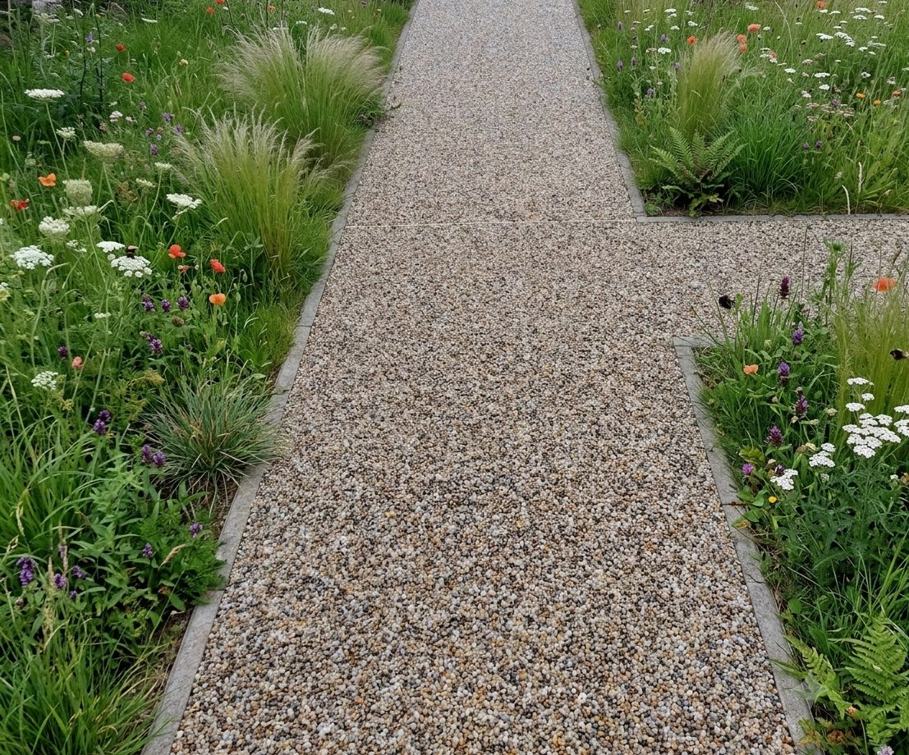
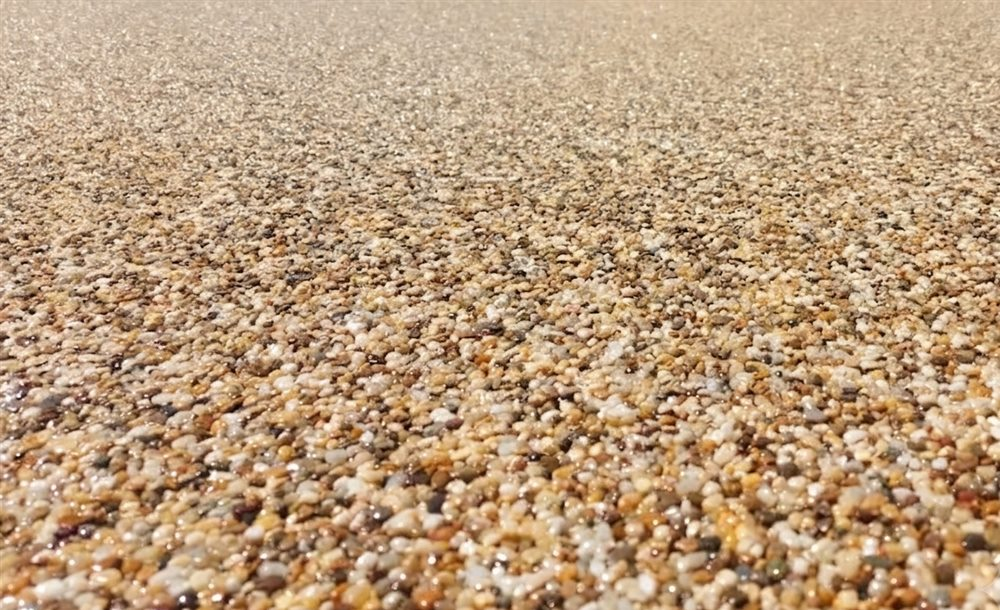
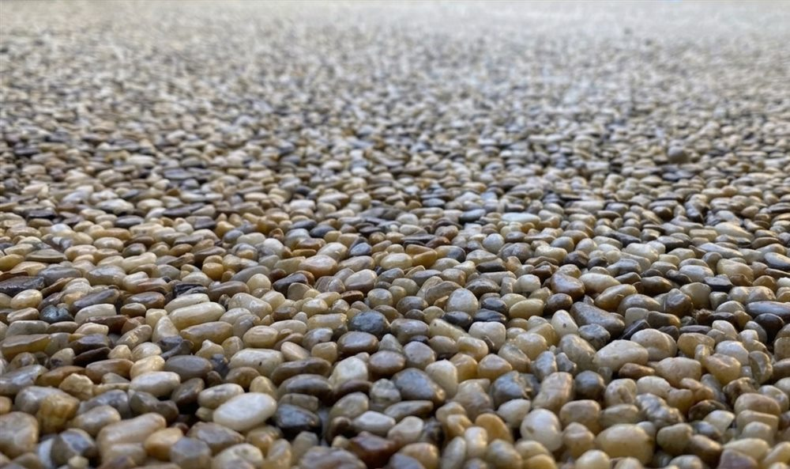

Schody a vstupy
Vstupní schody, podesty a místa u dveří, kde chcete čistší a reprezentativnější povrch.
Chrudimsko, Pardubicko a okolí do cca 40 km
Elegantní a odolný povrch na schody, terasy, vstupy, verandy a plochy kolem domu.

Čistý nový povrch pro starší beton a místa kolem domu, kde záleží na vzhledu i praktickém detailu.
Povrch kolem domu
Kamenný koberec je praktické řešení pro místa, kde je starší beton, popraskaný nebo nevzhledný povrch, vstupní schody, terasa, veranda, balkon nebo menší plocha kolem domu. Pomůžeme posoudit podklad, navrhnout vhodné řešení detailů a vybrat kamenivo tak, aby výsledek ladil k domu.
Použití
Vstupní schody, podesty a místa u dveří, kde chcete čistší a reprezentativnější povrch.
Kamenný koberec na terasu nebo verandu umí zjemnit vzhled starší plochy a sjednotit prostor kolem domu.
Menší plochy, kde je důležitý vzhled, odolnost a pečlivé řešení okrajů a napojení.
Vhodné tam, kde původní beton působí unaveně a dává smysl ho překrýt novým minerálním povrchem.
Proč dává smysl
Výsledek působí čistě a přirozeně, dobře se hodí k dlažbě, schodům, soklům i zahradním úpravám. Pomůžeme s výběrem odstínu kameniva, napojením na okolní plochy i praktickými detaily, aby povrch nebyl jen hezký na pohled, ale dával smysl při běžném používání.
Postup prací
Materiál a odstíny
U kamenného koberce je důležitý nejen samotný povrch, ale i odstín kameniva, zrnitost, okraje a napojení na schody, verandu, terasu nebo starší betonovou plochu.
Odstín a frakci kameniva vybíráme podle místa, okolních povrchů a dostupného materiálu. Kompletní možnosti projdeme při domluvě pokládky.


Pokud řešíte podobné místo, pošlete nám fotky. Podle nich často dokážeme říct, jestli je kamenný koberec vhodné řešení a co bude potřeba před pokládkou připravit.
Časté dotazy
Často ano, záleží ale na stavu podkladu. Beton nesmí být úplně rozpadlý a je potřeba vyřešit čištění, pevnost, spád i okraje.
Ano, vstupní schody a podesty patří mezi častá místa použití. Důležité je dobře navrhnout hrany a napojení na okolní plochy.
Ano, kamenný koberec na terasu nebo verandu může sjednotit vzhled starší plochy a působí přirozeně u domu i zahrady.
Pomůžeme zvolit odstín podle domu, soklu, dlažby, fasády a okolních ploch, aby výsledek nepůsobil cize.
Ano, pro první představu často stačí fotky místa, přibližné rozměry a obec. Přesnější postup domluvíme podle stavu plochy.
Pracujeme na Chrudimsku, Pardubicku a v okolí — například Chrudim, Slatiňany, Heřmanův Městec, Hrochův Týnec, Pardubice a okolní obce.
Nezávazná poptávka
Napište, kde chcete kamenný koberec použít, přibližnou velikost plochy a ideálně přiložte fotky schodů, terasy, verandy nebo starého betonu.